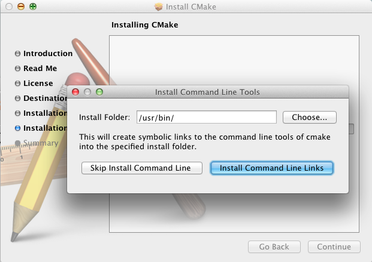

Getting started with qibuild on Mac OS¶
Installing Xcode¶
Then you should install a C++ compiler and the command line tools to use it.
The best way to do so is to install Xcode from the Apple store.
First of all you need to install Xcode.
- You must have a developer account to download the command line tools after installing Xcode. Preferences -> Download -> Components -> Command Line Tools
Starting with Xcode4, the command line compile tools
(gcc, make, and so on), are not installed by default and CMake cannot
work without them.
Go to Preferences/Downloads/Components and install
the command line tools form here:
Installing CMake¶
Install CMake from CMake website:
http://www.cmake.org/cmake/resources/software.html
During CMake installation, you will be asked to choose a path to install command line links:
Just choose the default path.
(qibuild cannot work without CMake installed this way)
Installing QtCreator (optional)¶
Although qibuild can work with Xcode, it is best to use
it with QtCreator since it is better supported.
Install QtCreator from the qtproject website.
First run¶
You should run
$ qibuild config --wizard
A file will be generated in ~/.config/qi/qibuild.xml.
It is shared by all the worktrees you will create.
You will be asked to choose a CMake generator.
If you wish to use QtCreator, select Unix Makefiles.
If you cannot live without Xcode, select Xcode
Note that you can still re-run the config wizard anytime you want.
Building with QtCreator¶
Building with Xcode¶
Just open the .xcodeproj generated in the build directory